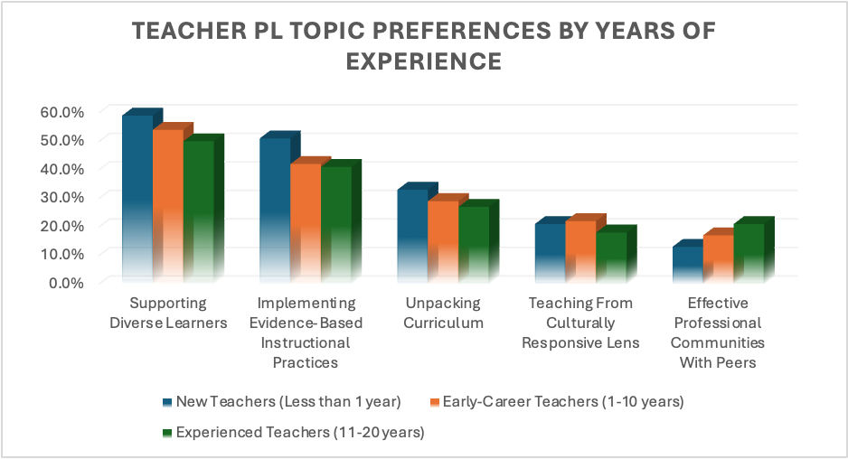

Elevating Teacher Growth: Insights into Desired Professional Learning Experiences
Beyond the Basics: What Teachers Really Seek from Professional Learning
What Do Teachers Want From Professional Learning?
Have you ever attended a professional learning (PL) session and walked away feeling disconnected? Across the country, there needs to be more clarity between what is commonly offered to teachers and what they really want from PL. A school’s success depends on designing successful, meaningful, innovative PL that kindles teachers’ passion for continuous improvement.
Naturally, teachers want to invest their time and effort in activities that are relevant, practical, and directly applicable to their classrooms. In this blog post, we provide a snapshot of PL opportunities some of our partners are eager to invest their time and effort in according to Teaching Lab survey data.
{kind=link}
Over the 2022-2023 school year, 1600 teachers indicated their preferences for upcoming professional learning opportunities. Participants could pick their top two activities from a predetermined list given by Teaching Lab that aligns with our service offerings and focus. The responses indicated that the top priorities for teachers included supporting diverse student learners (52%), implementing evidence-based instructional practices (42%), and unpacking curriculum (28%) as their highest priority. In addition, nearly 20% of respondents expressed a desire for more PL opportunities that focus on pedagogy from a culturally responsive perspective and on developing effective professional communities with their peers.
Do Novice and Experienced Teachers Want the Same Things from PL?
Understanding the evolving priorities of teachers at different experience levels is crucial for designing targeted and effective PL opportunities to address educators’ targeted needs and interests throughout their careers.

During the 2022-2023 school year, teachers (76) with less than one year of teaching experience expressed a high level of interest in targeted areas for PL, including:
Supporting diverse learners (i.e., English Learners, students with disabilities, and students with unfinished learning) at almost 60%.
Implementing effective, evidence-based instructional practices at slightly over 50%.
Unpacking curriculum at 33%.
Teaching from a culturally responsive lens at 21%.
Developing effective professional communities with peers at 13%.
Teachers (626) with 1-10 years of teaching experience articulated their desire for PL that supports:
Diverse learners at 54%.
Implementing effective, evidenced-based instructional practices at 42%.
Unpacking curriculum at 29%.
Teaching from a culturally responsive lens at 22%.
Developing effective professional communities with peers at 17%.
In contrast, educators (546) with 11-20 years of teaching experience articulated their desire for PL in slightly different proportions:
Supporting diverse learners at 50%.
Implementing effective, evidenced-based instructional practices at 41%.
Unpacking curriculum at 27%.
Developing effective professional communities with peers at 20%.
Teaching from a culturally responsive lens at 18%.
It is important to note that teachers across experience levels also expressed an interest in receiving regular and personalized coaching from instructional experts and becoming facilitators for peer professional learning.
Cultural Responsiveness and Professional Communities
There was a 3% distinction between novice and experienced teachers concerning the emphasis on teaching from a culturally responsive lens. As teaching experience increased, this discrepancy expanded to an 8% difference in how novice and experienced teachers prioritized “developing effective professional communities with peers.” This pattern may suggest that novice teachers may place a higher emphasis on cultural responsiveness and collaboration, while more experienced teachers may have already developed proficiency in these areas.
Consistent Emphasis on Supporting Diverse Learners
Supporting diverse learners is a consistent priority for novice and more experienced teachers. This may highlight the ongoing need for PL that addresses the diverse needs of students- including English Learners, students with disabilities, and those with unfinished learning.
Evidence-Based Instructional Practices Across Experience Levels
Implementing effective, evidence-based instructional practices is a shared priority among teachers regardless of experience levels. This underscores the importance of a strong pedagogical foundation and the desire for ongoing training in evidence-based teaching methods.
Shifts in Professional Learning Priorities with Experience
The data may indicate a shift in PL priorities based on teaching experience. Teachers with less than one year of experience may prioritize a broad range of topics, strongly emphasizing supporting diverse learners. In contrast, those with 11-20 years of experience may maintain a focus on supporting diverse learners but show a decreased emphasis on unpacking curriculum and teaching from a culturally responsive lens.
Varied Emphases on Unpacking Curriculum
Again, while unpacking curriculum is a priority for both groups, it is relatively more emphasized by teachers with less than one year of experience. This may suggest a particular interest or perceived need for novice educators to delve into curriculum content and structure.
Interest in Coaching and Peer Learning Roles
It is important to note that teachers across experience levels also expressed a shared interest in receiving regular and personalized coaching from a content area expert. Additionally, there is interest in “becoming a facilitator for peer professional learning”– possibly indicating a desire for active roles in professional development within learning communities.
Do Teachers of Different Racial Identities Want the Same Things from PL?
The chart below offers insights into the PL priorities of a diverse sample of teachers- including those who identify as Asian (44), Black/African American (279), Native American or Indian (28), and White (1,185). The six foremost priorities identified were:
Supporting diverse learners (such as English Learners, students with disabilities, and those with unfinished learning).
Implementing effective, evidence-based instructional practices.
Unpacking curriculum.
Teaching from a culturally responsive lens.
Developing effective professional communities with peers.
Becoming a facilitator for peer professional learning.
These priorities help provide a snapshot of the shared focus areas among teachers from various racial backgrounds.
{kind=link}
Challenges in Culturally Responsive Teaching
The scores for teaching from a culturally responsive lens indicate a collective challenge across racial groups. Native American or Indian teachers scored notably lower, suggesting potential opportunities for PL in this area. The data highlights the need for increased efforts to integrate cultural responsiveness into teaching practices (Cantrell et. al, 2022).
High-Quality PL May Help Address:
Collaboration & Cultural Exchange
Curriculum Integration
Effective Communication
Implicit Bias Awareness
Inclusive Classrooms
Consistency in Evidenced-Based Instructional Practices
Across all racial groups, there was a relatively close alignment in scores for evidence-based instructional practices. While there are slight variations, the similarity may suggest a shared commitment to utilizing evidence-based approaches concerning pedagogy—cutting across racial and cultural backgrounds (Loveless, 2023).
High-Quality PL May Help Enhance Opportunities For:
Coaching
Collaborative Learning Communities
Evidence-Based Practices
Feedback & Reflections
Data-Informed Decision Making
Standards Alignment
Technology Integration
Difference in Developing Professional Communities
The scores for developing effective professional communities with peers vary among racial groups. Native American or Indian teachers scored the highest, possibly indicating a strong inclination toward collaborative PL. White teachers scored slightly lower, while Asian and Black teachers scored lower still. These differences may signify varying levels of emphasis or engagement in building professional communities (Simmie, 2023).
High-Quality PL May Help Foster:
Collaborative Planning
Diversity & Inclusion
Recognition & Celebrations
Sense of Shared Purpose
Structured Opportunities for Collaboration
Team building
Disparities in Supporting Diverse Learners
The difference in scores among racial groups in supporting diverse learners may highlight a potential gap in understanding or addressing the needs of diverse student populations. In this particular sample, Asian teachers scored notably higher than Black and Native American or Indian teachers—indicating potential differences in educational approaches (Jones et. al, 2019).
High-Quality PL May Help Address:
Access & Equity
Cultural Competencies
Data-Driven Decision-Making
Differentiated Instruction Strategies
English Learners Needs
Parent & Community Engagement
Social-Emotional Learning (SEL) Supports
Roles as Facilitators for Peer PL
The data on becoming a facilitator for peer PL reveals a clear distinction among racial groups. Native American or Indian teachers score the highest, suggesting a potential leadership role in fostering peer learning. Black teachers also scored relatively high, while Asian and White teachers scored lower. This underscores the importance of recognizing and supporting teachers in leadership roles for peer professional development, particularly among Native American or Indian teachers (Canaran, 2023).
High-Quality PL May Help Foster:
Content Knowledge and Expertise
Educational Best Practices
Inclusive and Safe Spaces for Collaborative Learning
Mentorship & Support Networks
Support for Diverse Learning Styles
Understanding Andragogy
Variation in Unpacking Curriculum
The scores for unpacking curriculum reveal noteworthy differences among teachers of varying racial backgrounds. Black teachers scored higher than others, suggesting a potential emphasis on thorough examination and understanding of curriculum content. Asian and White teachers ranked unpacking curricula slightly lower than their counterparts. But this may be indicative of an area for further exploration (Creech, 2023)
High-Quality PL May Help Address:
Assessment & Evaluation Strategies
Collaborative Curriculum Planning
Comprehension of Standards & Learning Objectives
Equity & Inclusion
Feedback and Reflection Opportunities
Utilizing Data to Help Inform Instruction
Do Administrators Want the Same PL Opportunities as Teachers?
At the close of SY23, 39% of administrators (55) ranked “unpacking curriculum” as one of their top priorities. These same administrators also deemed “implementing evidence-based practices” (29%) and “developing effective professional communities with peers” (25%) important. The dataset may have a narrow scope, but it is still important to note that there may be a level of misalignment between the priorities of administrators and teachers. While there is overlap in some areas (i.e., implementing evidence-based instructional practices), the percentages indicate differences in emphasis. Administrators prioritized “unpacking curriculum” and “implementing evidence-based instructional practices” more than “developing effective professional communities with peers”. On the other hand, teachers prioritized “supporting diverse learners” more than “implementing evidence-based instructional practices” and “unpacking curriculum.”
This misalignment suggests that administrators may be placing greater emphasis on curriculum planning and instructional methods, while teachers prioritize addressing the needs of diverse learners. To enhance alignment, administrators and teachers may consider continuing to engage in open communication and collaborative decision-making processes to: 1) Help identify shared priorities and 2) Enhance strategies for effectively addressing the needs of both groups.
{kind=link}
{kind=link}
The majority of Teaching Lab participants (1500) opt for fully In-Person Sessions (28%) or Virtual Sessions (25%); slightly fewer prefer a hybrid model (19%). Below we outline the advantages and considerations of different PL formats.
| MODALITY | ADVANTAGES | CONSIDERATIONS |
|---|---|---|
| Regular and Personalized Coaching from an Instructional Expert | -Personalized guidance, immediate feedback, and a tailored approach to individual needs. -Deeper and ongoing engagement with professional development. |
-Dedicated time, availability of instructional experts -Commitment to regular coaching sessions. |
| Virtual Sessions | -Flexibility for teachers in geographically diverse locations. -Can help accommodate busy schedules, and they may be more cost-effective. |
-Dependence upon technology and reliable internet connections. -Potential for reduced interaction compared to in-person sessions |
| In-Person Sessions: | -Promotes face-to-face interaction -Promotes immediate engagement -Fosters a sense of community among participants and can provide a more immersive learning experience. |
-Requires travel and physical presence -Involves additional costs for organizing events. |
| Hybrid (In-Person and Virtual): | -Combines the benefits of both in-person and virtual sessions -Can accommodate diverse preferences and needs. |
-Requires effective coordination to balance both components. -May need to account for technical challenges and potential disparities in participation. |
| Asynchronous Modules (Self-Paced Learning): | -Provides flexibility for teachers to learn at their own pace and on their own schedule. -Accommodates different learning styles and allows for repeated access to materials. |
-Limited immediate interaction and feedback. -Some practitioners may prefer more structured and guided learning experiences. |
These priorities collectively offer a snapshot of the common focus areas among a diverse sample of teachers and administrators—emphasizing the importance of addressing diverse needs within educational communities. Understanding the evolving priorities of teachers at different experience levels is crucial for designing targeted and effective PL opportunities to address educators’ targeted needs and interests throughout their careers.